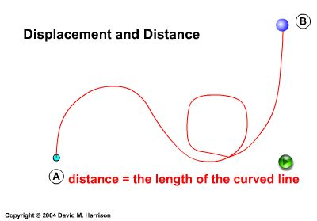
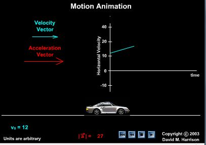
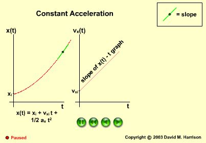
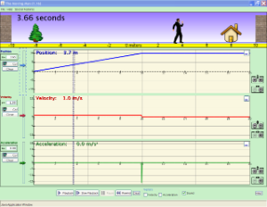
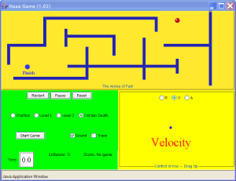
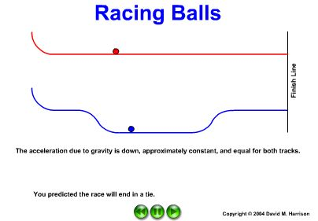
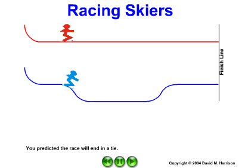
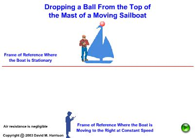

Student Learning Objectives
Lessons / Lecture Notes
Important Equations
Example Problems
Pencasts
Applets and Animations
Videos
Student Learning Objectives
Lessons / Lecture Notes
The Physics Classroom (conceptual)
PY105 Notes from Boston University (algebra-based):
Introductory physics notes from University of Winnipeg (algebra-based):
HyperPhysics (calculus-based)
PHY2048 notes from Florida Atlantic University (calculus-based):
PHY2043 notes from Florida Atlantic University (calculus-based)
General Physics I notes from ETSU (calculus-based)
|
|
|
Example Problems
Problem 1
Starting from rest, a car accelerates at a constant 4.00 m/s2 for a distance of 425 m. The car is then shifted into neutral and slows down at a rate of 2.25 m/s2. How much time elapses between when the car starts and when it stops? (Solutions)
Problem 2 This applet show position, velocity, and acceleration graphs
for 6 different scenarios. It also includes an option where you can edit
the velocity vs. time graph. Learn about position, velocity, and acceleration graphs. Move
the little man back and forth with the mouse and plot his motion. Set
the position, velocity, or acceleration and let the simulation move the
man for you. Learn about position, velocity, and acceleration in the "Arena
of Pain". Use the green arrow to move the ball. Add more walls to the
arena to make the game more difficult. Try to make a goal as fast as you
can. The Car on an Inclined Plane model displays a car on an
incline plane. When the car reaches the bottom of the incline, it
can be set to bounce (elastic collision) with the stop attached to the
bottom of the incline. The car consists of the car body, two
rotating front wheels, and two rotating rear wheels. The Rocket Car on an Inclined Plane model displays a car on an
inclined plane. When the car reaches the bottom of the incline,
it can be set to bounce (elastic collision) with the stop attached to
the bottom of the incline. The car consists of the car body, two
rotating front wheels, and two rotating rear wheels. The Ceiling Bounce Model shows a ball launched by a spring-gun
in a building with a very high ceiling and a graph of the ball's
position or velocity as a function of time. Students are asked set
the ball's inital velocity so that it barely touches the ceiling.
A hot-air balloon is rising upward with a constant speed
of 3.50 m/s. When the balloon is 115 m above the ground, a passenger
trying to take a picture accidentally drops his cell phone over the side
of the balloon. Ignoring air resistance, how much time elapses before
the cell phone hits the ground? (Solutions)
Pencasts
1 D Kinematics
brought to you by Livescribe
(Note: Please allow ~30 seconds after hitting play for the entire file to load. Click here to download a pdf file of this problem.)
Applets and Animations
Displacement and Distance

A simple animation showing the difference between the distance and the displacement.
Motion Diagram

A car with a non-zero initial speed has a constant acceleration whose value can be controlled by the user.
Constant Acceleration

1-dimensional kinematics of a body undergoing constant
acceleration. Includes visually integrating the acceleration and
velocity graphs, and visually differentiating the position and velocity
graphs.
Motion with Constant Acceleration

This Java applet shows a car moving with constant acceleration.
The green control panel contains text fields where you can vary the
values of initial position, initial velocity and acceleration. The
applet shows the motion of the car as well as graphs of x, v, and a.
One-Dimensional Kinematics

The Moving Man

Maze Game

Racing Balls

Two balls roll down two different low-friction tracks near the
Earth's surface. The user is invited to predict which ball will reach
the end of the track first.
Racing Skiers

Same as the above animation except with skiers.
Galilean Relativity

Illustrating Galilean relativity using his example of dropping a ball from the top of the mast of a sailboat.
Car on Inclined Plane
Rocket Car on Inclined Plane
Ceiling Bounce
| Great video showing a feather and a hammer dropped at the same time on the moon. Newton's Laws predict that they will both hit the ground at the same time in the absence of air resistance. (Notice how long it takes them to fall compared to the time it would take on earth.) |